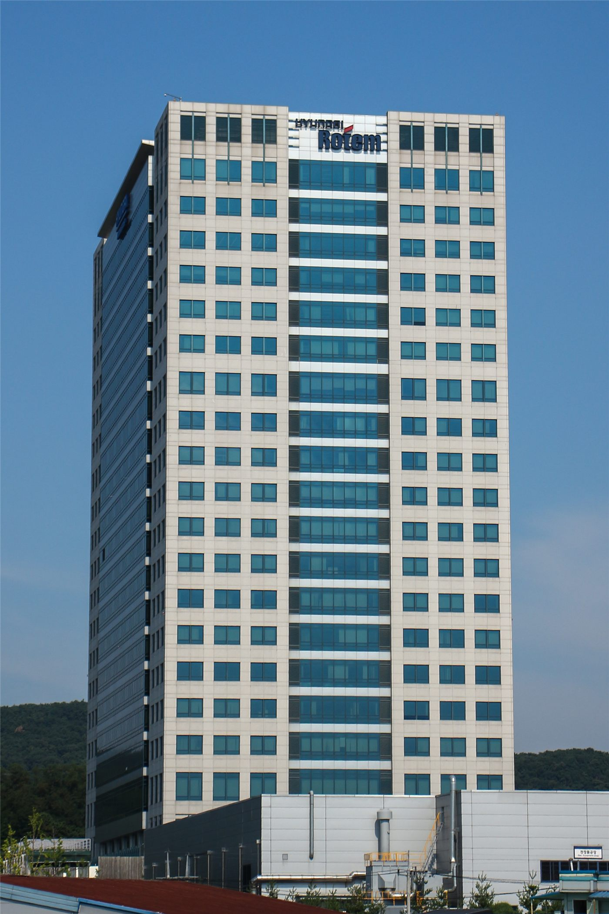

‘정시성 흔들’ 독일 철도, 신뢰 회복이 과제
한때 정확성의 상징이던 독일 철도가 잦은 연착으로 신뢰 회복이라는 숙제를 안았다. 노후 인프라와 투자 부족이 핵심 원인으로 지목된다.
왕숙영 기자 · 2026.06.30
橋국제

환구망(環球網) 등은 독일 철도(도이체반)의 정시 운행률이 떨어지면서 이용객 불만이 커지고 있다고 전했다. 분석은 그 근원이 노후화된 선로와 시설, 만성적 투자 부족에 있다고 본다.
광고 문의 · 300×250독일 철도는 유럽 물류·여객의 핵심 동맥으로, 지연은 곧 산업과 일상에 비용으로 전가된다. 정부와 운영사는 대규모 보수·현대화 계획을 추진해 왔다.
전문가들은 단기 수리뿐 아니라 장기적 자본 투입과 운영 효율화가 병행돼야 한다고 본다. 인프라 신뢰는 한번 무너지면 회복에 오랜 시간이 든다.
철도의 정시성은 한 사회의 ‘약속 이행’ 능력을 보여주는 지표이기도 하다. 독일의 경험은 다른 나라의 인프라 정책에도 시사점을 준다.
華橋時報는 특정국을 탓하는 프레임 대신, 인프라 노후라는 보편적 과제와 그 해법에 초점을 맞춘다.